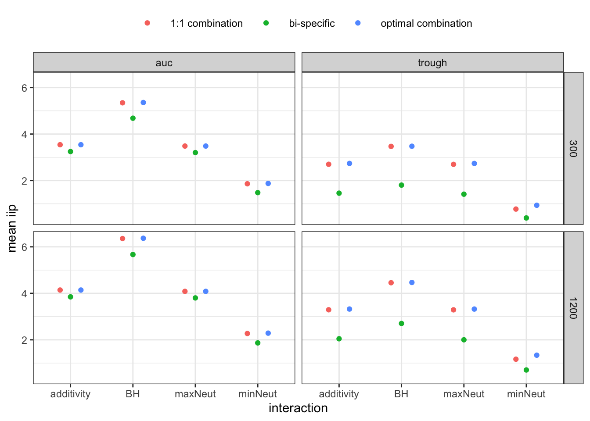
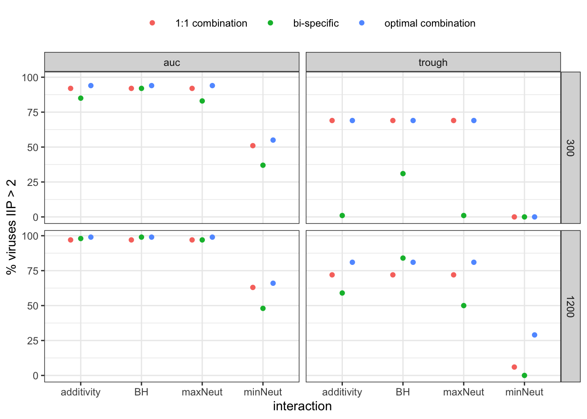
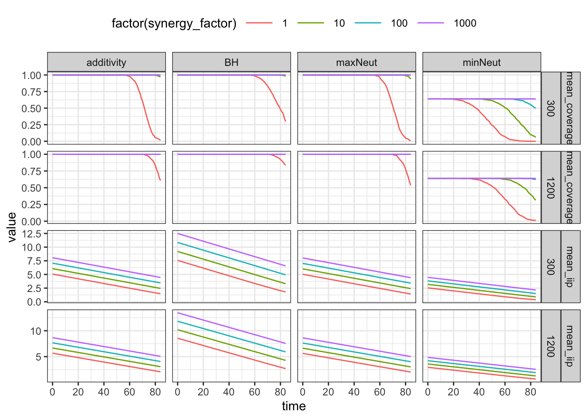
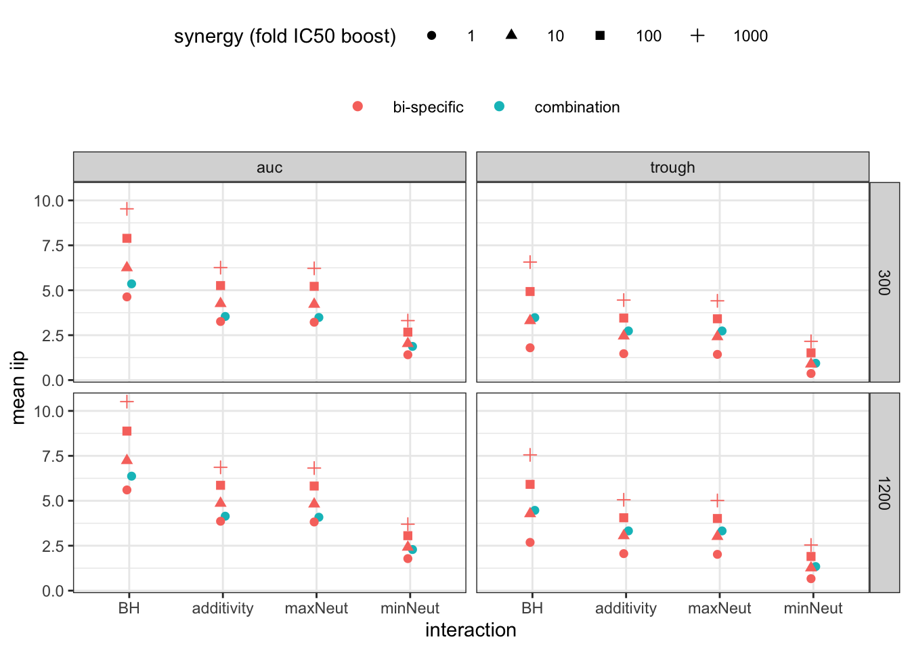
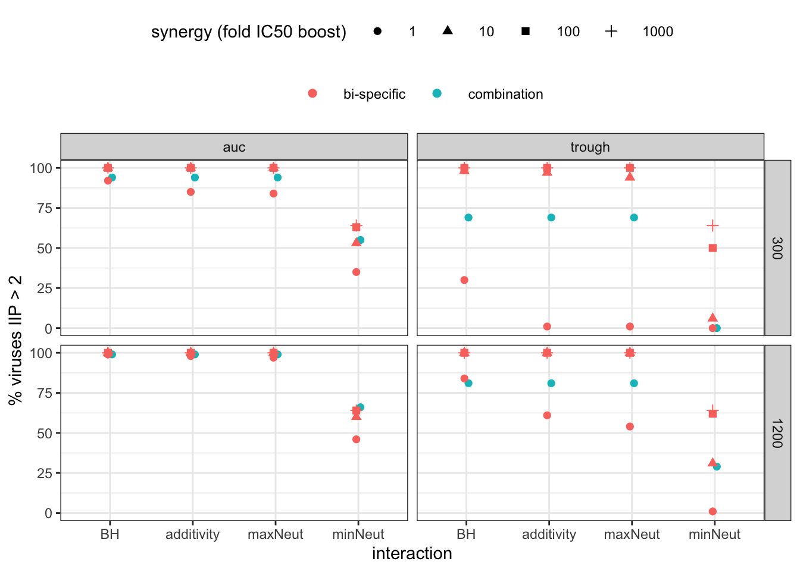
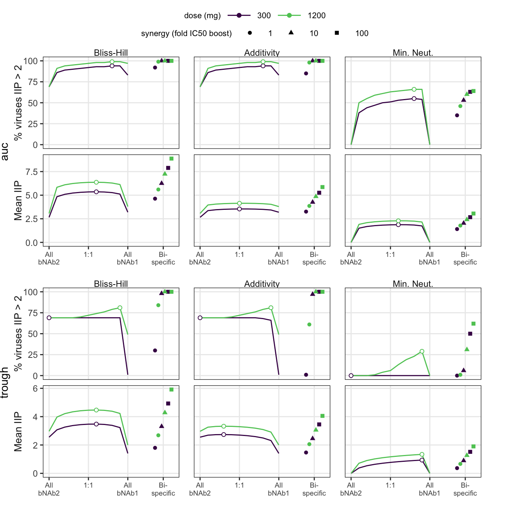

Last updated: 2022-03-15
Checks: 7 0
Knit directory: pkpd-bnab-project/
This reproducible R Markdown analysis was created with workflowr (version 1.7.0). The Checks tab describes the reproducibility checks that were applied when the results were created. The Past versions tab lists the development history.
Great! Since the R Markdown file has been committed to the Git repository, you know the exact version of the code that produced these results.
Great job! The global environment was empty. Objects defined in the global environment can affect the analysis in your R Markdown file in unknown ways. For reproduciblity it’s best to always run the code in an empty environment.
The command set.seed(20201117) was run prior to running the code in the R Markdown file. Setting a seed ensures that any results that rely on randomness, e.g. subsampling or permutations, are reproducible.
Great job! Recording the operating system, R version, and package versions is critical for reproducibility.
Nice! There were no cached chunks for this analysis, so you can be confident that you successfully produced the results during this run.
Great job! Using relative paths to the files within your workflowr project makes it easier to run your code on other machines.
Great! You are using Git for version control. Tracking code development and connecting the code version to the results is critical for reproducibility.
The results in this page were generated with repository version bf4e271. See the Past versions tab to see a history of the changes made to the R Markdown and HTML files.
Note that you need to be careful to ensure that all relevant files for the analysis have been committed to Git prior to generating the results (you can use wflow_publish or wflow_git_commit). workflowr only checks the R Markdown file, but you know if there are other scripts or data files that it depends on. Below is the status of the Git repository when the results were generated:
Ignored files:
Ignored: .DS_Store
Ignored: .Rhistory
Ignored: .Rproj.user/
Ignored: analysis/.DS_Store
Ignored: analysis/.Rhistory
Ignored: code/.DS_Store
Ignored: code/python/.DS_Store
Ignored: code/python/.ipynb_checkpoints/
Ignored: code/tmp-compare-old-new.R
Ignored: code/tmp-hill-exploration.R
Ignored: code/tmp-ratio-grid-search.R
Ignored: data/.DS_Store
Ignored: output/.DS_Store
Ignored: output/sim_results/.DS_Store
Ignored: output/sim_results/grid_full_mean2020-11-29.csv
Ignored: output/sim_results/opt_ratio_summary.csv
Ignored: output/sim_results/opt_ratio_wide.csv
Ignored: output/sim_results/optimum_wide.csv
Untracked files:
Untracked: Untitled.R
Untracked: code/python/correlations-optimal.Rmd
Untracked: code/python/correlations.Rmd
Untracked: correlations-optimal.R
Untracked: data/dose10_scrape.csv
Untracked: data/dose30_scrape.csv
Untracked: data/jvi.01909-20-s0001.xlsx
Untracked: output/bispecific_data.rda
Untracked: output/empirical-opt/double-opt-amp.rda
Untracked: output/empirical-opt/double-opt.rda
Untracked: output/empirical-opt/example-empirical-pk-dat.csv
Untracked: output/empirical-opt/triple-opt-amp.rda
Untracked: output/empirical-opt/triple-opt.rda
Untracked: output/processed_catnap_assay.csv
Untracked: output/processed_catnap_assay.rds
Untracked: sim-reproducibility-test.R
Unstaged changes:
Modified: code/publish_all.R
Note that any generated files, e.g. HTML, png, CSS, etc., are not included in this status report because it is ok for generated content to have uncommitted changes.
These are the previous versions of the repository in which changes were made to the R Markdown (analysis/bispecific.Rmd) and HTML (docs/bispecific.html) files. If you’ve configured a remote Git repository (see ?wflow_git_remote), click on the hyperlinks in the table below to view the files as they were in that past version.
| File | Version | Author | Date | Message |
|---|---|---|---|---|
| Rmd | bb4f245 | Bryan | 2022-03-15 | final version of code |
| Rmd | 929c62c | Bryan | 2022-03-13 | data documentation |
| Rmd | 41337fd | Bryan | 2022-03-13 | start of documentation cleanup |
| Rmd | a3b37fd | Bryan | 2022-01-04 | method figures for empirical |
| Rmd | ce0f695 | Bryan | 2021-07-11 | edits for bispecific for final analysis |
| Rmd | d28596a | Bryan | 2021-03-23 | updated synergy code, added for all interactions |
| Rmd | 3009982 | Bryan | 2021-03-23 | scripts for december draft of paper |
library(tidyverse)
library(kableExtra)
library(cowplot)
library(viridis)
library(VISCPK)
theme_set(theme_bw() + theme(legend.position = "top", legend.key.width = unit(1, "cm"),
legend.box = "vertical"))
source("code/neutralization-funs.R")
source("code/onecmptPKPD-sims.R")
ratio_lab = "mAb1/total dose"
ratio_breaks = 0:4/4
ratio_labels = c("mAb 2", 1:3/4, "mAb 1")
ratio_labels_x = c("All\nmAb 2", 1:3/4, "All\nmAb 1")
doses = c(150, 300, 600, 1200, 2400)
interaction_labeller = function(interaction_var){
factor(interaction_var,
labels = c("Min. Neut.", "Max. Neut.", "Additivity", "Bliss-Hill"),
levels = c("minNeut", "maxNeut", "additivity", "BH")
)
}load("output/bispecific_data.rda")Combine a superb bnab with bad half-live with decent mab with great half-life.
Here we will want to look at both mean IIP and coverage IIP > 2
main_vars = c("ratio", "c0", "muIC50_1", "muIC50_2",
"hl_1", "hl_2", "sigIC50_1", "sigIC50_2",
"omega_1", "omega_2")
#the case study2 notation is an artifact of old two case study analysis
case_study2_full = bispecific_data %>%
filter(muIC50_1 == -3 & muIC50_2 == -2 &
sigIC50_1 == 0.25 & sigIC50_2 == 0.5 &
omega_1 == 1 & omega_2 == 0.67 &
hl_1 == 7 & (hl_2 == 7 | hl_2 == 84))
CS2_iip = case_study2_full %>%
select(-contains("coverage")) %>%
gather(key, value, -all_of(main_vars)) %>%
separate(key, into = c("interaction", "endpoint", "summary", "time"), sep = "_") %>%
unite(summary, summary, endpoint, sep = "_")
CS2_coverage = case_study2_full %>%
select(all_of(main_vars), contains("coverage")) %>%
gather(key, value, -all_of(main_vars)) %>%
separate(key,
into = c("interaction", "endpoint", "coverage_endpoint", "summary", "time"),
sep = "_") %>%
mutate(
coverage_level = parse_number(coverage_endpoint),
summary = "mean_coverage"
) %>%
select(-endpoint, -coverage_endpoint)
# CS = case study
CS2_data = bind_rows(CS2_iip, CS2_coverage) %>%
mutate(summary_label = if_else(
summary == "mean_iip",
"Mean IIP",
paste("% viruses IIP >", coverage_level)),
value = if_else(summary == "mean_iip", value, 100 * round(value, 2))
)
#main_vars[-1] should exclude ratio
CS2_combo = CS2_data %>%
filter(c0 != 2400, hl_1 != hl_2) %>%
group_by_at(all_of(main_vars[-1])) %>%
group_by(interaction, summary_label, summary, time, coverage_level, .add = T) %>%
summarize(
total_max = length(which(value==max(value))),
best_ratio = ratio[which.max(value)],
best_value = max(value),
`.groups` = "drop"
) %>%
mutate(
admin = "combination",
)
CS2_bispecific = CS2_data %>%
filter(ratio == 0.5 & hl_1 == hl_2 & c0 > 150) %>%
rename(
best_ratio = ratio,
best_value = value
) %>%
mutate(
admin = "bi-specific",
c0 = c0/2
)
CS2_summary = bind_rows(CS2_combo, CS2_bispecific) %>%
ungroup() CS2_summary %>%
filter(c0 %in% c(300, 600) & summary_label %in% c("IIP > 2", "Mean IIP") &
admin == "combination") %>%
mutate(c0_1 = best_ratio * c0, c0_2 = (1-best_ratio) * c0) %>%
group_by(c0, summary_label, interaction, time, best_ratio) %>%
nest() %>%
mutate(pk_data = map(data, ~.pk_1cmpt(select(., c0_1, c0_2, hl_1, hl_2), 84))) %>%
filter(best_ratio > 0 & best_ratio < 1) %>%
rename(timepoint = time) %>%
unnest(cols = pk_data) %>%
gather(mab, conc, conc_1, conc_2) %>%
ggplot(aes(x = time, y = conc, colour = mab, linetype = factor(c0))) +
geom_line() +
scale_y_log10() +
facet_wrap(~best_ratio)Differences in PK over varying doses.
bispecific_pk = map_df(c(300, 1200), ~ tibble(
time = seq(0, 84, by = 1),
c0 = .,
conc = . / 3 * exp(-time * log(2) / 7)
))
bispecific_pk %>%
ggplot(aes(x = time, y = conc, linetype = factor(c0))) +
geom_line() +
scale_y_log10()bi-specific 1-cmpt PK
Want to compare bi-specific to optimal parent. Look at all doses and summary endpoints to start. Switch between 300 and 1200ug; mean iip
CS2_summary %>%
filter(admin == "combination") %>%
ggplot(aes(x = interaction, y = best_ratio, shape = time)) +
geom_point() +
geom_hline(yintercept = 0.5, linetype = "dashed") +
scale_y_continuous(breaks = ratio_breaks, labels = ratio_labels, limits = c(0, 1)) +
labs(y = "optimal ratio") +
facet_grid(rows = vars(summary_label),
cols = vars(c0), space = "free", scales="free_x") +
theme(legend.box = "vertical", axis.text.x = element_text(angle = 30, hjust = 1))Optimal ratios for all summaries and interactions with combination administration.
CS2_summary %>%
filter(admin == "combination" & c0 %in% c(300, 1200) &
(summary == "mean_iip" | coverage_level == 2)) %>%
ggplot(aes(x = interaction, y = best_ratio, shape = time)) +
geom_point() +
geom_hline(yintercept = 0.5, linetype = "dashed") +
scale_y_continuous(breaks = ratio_breaks, labels = ratio_labels, limits = c(0, 1)) +
labs(y = "optimal ratio") +
facet_grid(rows = vars(summary_label),
cols = vars(c0), space = "free", scales="free_x") +
theme(legend.box = "vertical", axis.text.x = element_text(angle = 30, hjust = 1))Alt. visualization of optimal subset.
CS2_data %>%
filter(hl_1 != hl_2 & c0 %in% c(300, 1200) &
(summary == "mean_iip" | coverage_level == 2)) %>%
ggplot(aes(x = ratio, y = value, colour = factor(c0), linetype = time)) +
geom_line() +
scale_x_continuous(breaks = ratio_breaks, labels = ratio_labels_x, limits = c(0, 1)) +
geom_point(data = subset(CS2_combo, c0 %in% c(300, 1200) &
(summary == "mean_iip" | coverage_level == 2)),
aes(x = best_ratio, y = best_value)) +
facet_grid(rows = vars(summary_label),
cols = vars(interaction), scales="free_y", switch = "y") +
labs(colour = "dose (mg)", linetype = "", x = "ratio mAb 1 to total dose", y= "") +
theme(strip.placement = "outside", strip.background = element_blank(),
panel.spacing.x = unit(1, "lines"),
strip.switch.pad.grid = unit(0, "lines"),
legend.box = "horizontal")Ratio sensitivity, all outcomes.
The PK penalty is evident in the 1:1 comparison, where the bi-specific would dominate by assumption for common PK.
balance_comb = CS2_data %>%
filter(c0 %in% c(300, 1200) &
hl_1 != hl_2 & (is.na(coverage_level) | coverage_level == 2) &
ratio == 0.5) %>%
mutate(best_value = value, best_ratio = ratio,
admin = "1:1 combination")CS2_summary %>%
bind_rows(balance_comb) %>%
mutate(
admin = if_else(admin == "combination", "optimal combination", admin)
) %>%
filter(summary == "mean_iip" & c0 %in% c(300, 1200)) %>%
dplyr::select(-total_max, -coverage_level) %>%
ggplot(aes(x = interaction, y = best_value, colour = admin)) +
geom_point(position = position_dodge(width = 0.5)) +
#geom_abline() +
labs(y = "mean iip", color = "") +
facet_grid(cols = vars(time), rows = vars(c0), space = "free", scales="free_x")
CS2_summary %>%
bind_rows(balance_comb) %>%
mutate(
admin = if_else(admin == "combination", "optimal combination", admin)
) %>%
filter(summary == "mean_coverage" & c0 %in% c(300, 1200), coverage_level == 2) %>%
dplyr::select(-total_max) %>%
ggplot(aes(x = interaction, y = best_value, colour = admin)) +
geom_point(position = position_dodge(width = 0.5)) +
#geom_abline() +
labs(y = "% viruses IIP > 2", color = "") +
facet_grid(cols = vars(time), rows = vars(c0), space = "free", scales="free_x")
Synergy is defined as an “IC50” boost-factor (\(\alpha > 1\)), like an inverse-potency reduction. The neutralization calculations are done as follows using the titer definition, where i = parental arm: \[\tau_i = \frac{C(t)}{IC50_i}\]
Minimum: \[1 - [1+\alpha*min_i\{\tau_i\}]^{-1}\]
Maximum: \[1 - [1+\alpha*max_i\{\tau_i\}]^{-1}\]
Additivity: \[1 - [1+\alpha\sum_i{\tau_i}]^{-1}\]
BH: \[1 - \prod_i[1+\alpha\tau_i]^{-1}\]
The conversions to IIP then follow nicely:
Minimum: \[log_{10}[1+\alpha*min_i\{\tau_i\}]\]
Maximum: \[log_{10}[1+\alpha*max_i\{\tau_i\}]\]
Additivity: \[log_{10}[1+\alpha\sum_i{\tau_i}]\]
BH: \[\sum_ilog_{10}[1+\alpha\tau_i]\]
bispecific_pd = CS2_bispecific %>%
select(omega_1, omega_2, muIC50_1, muIC50_2, sigIC50_1, sigIC50_2) %>%
distinct()#interaction_function()
viral_iC50s_sims = .sample_IC50s(total_virus_sims = 500, pd_parms = bispecific_pd,
virus_seed = 822960625)
calc_bispecific_iip = function(conc, viral_ic50s, synergy_levels = c(1, 10, 100, 1000)) {
map_df(synergy_levels, function(i) {
viral_ic50s %>%
mutate(
titer_1 = conc / IC50_1,
titer_2 = conc / IC50_2,
min_titer = pmin(titer_1, titer_2),
max_titer = pmax(titer_1, titer_2)
) %>%
transmute(
synergy_factor = i,
maxNeut = log10(1 + max_titer * i),
minNeut = log10(1 + min_titer * i),
BH = log10(1 + i * titer_1) + log10(1 + i * titer_2),
additivity = log10(1 + i * (titer_1 + titer_2))
)
}) %>%
gather(interaction, iip, maxNeut, minNeut, BH, additivity) %>%
mutate(coverage = iip > 2) %>%
group_by(synergy_factor, interaction) %>%
summarize_all(list(mean = mean))
}
bispecific_pkpd = bispecific_pk %>%
group_by(c0, time) %>%
mutate(ID50_dat = map(conc, calc_bispecific_iip, viral_ic50s = viral_iC50s_sims)) %>%
unnest(cols = ID50_dat) %>%
rename(mean_iip = iip_mean, mean_coverage = coverage_mean)
bispecific_pkpd_summary = bispecific_pkpd %>%
arrange(c0, interaction, synergy_factor, time) %>%
group_by(c0, interaction, synergy_factor) %>%
summarize_at(vars(mean_iip, mean_coverage), list(
auc = ~ pracma::trapz(time, .x) / max(time),
trough = ~(.x[time == 84])
)
) %>%
gather(summary, best_value, mean_iip_auc:mean_coverage_trough) %>%
separate(summary, into = c("tmp1", "tmp2", "time")) %>%
unite(summary, tmp1, tmp2, sep = "_") %>%
mutate(admin = "bi-specific", coverage_level = 2) %>%
ungroup() %>%
mutate(
best_value = if_else(summary == "mean_iip", best_value, 100 * round(best_value, 2)),
summary_label = if_else(
summary == "mean_iip",
"Mean IIP",
paste("% viruses IIP >", coverage_level)
)
)bispecific_pkpd %>%
gather(outcome, value, mean_iip, mean_coverage) %>%
ggplot(aes(x = time, y = value, colour = factor(synergy_factor))) +
geom_line() +
facet_grid(cols = vars(interaction), rows = vars(outcome, c0), scales = "free_y")
CS2_combo %>%
mutate(synergy_factor = 1) %>%
bind_rows(bispecific_pkpd_summary) %>%
filter(summary == "mean_iip" & c0 %in% c(300, 1200)) %>%
ggplot(aes(x = interaction, y = best_value, colour = factor(admin), shape = factor(synergy_factor))) +
geom_point(aes(group = admin), position = position_dodge(width = 0.1), size = 2) +
labs(y = "mean iip", color = "", shape = "synergy (fold IC50 boost)") +
scale_x_discrete(limits = c("BH", "additivity", "maxNeut", "minNeut")) +
facet_grid(cols = vars(time), rows = vars(c0), space = "free", scales="free_x")
CS2_combo %>%
mutate(synergy_factor = 1) %>%
bind_rows(bispecific_pkpd_summary) %>%
filter(summary == "mean_coverage" & c0 %in% c(300, 1200) & coverage_level == 2) %>%
ggplot(aes(x = interaction, y = best_value, colour = factor(admin),
shape = factor(synergy_factor))) +
geom_point(aes(group = admin), position = position_dodge(width = 0.1), size = 2) +
labs(y = "% viruses IIP > 2", color = "", shape = "synergy (fold IC50 boost)") +
scale_x_discrete(limits = c("BH", "additivity", "maxNeut", "minNeut")) +
facet_grid(cols = vars(time), rows = vars(c0), space = "free", scales="free_x")
Combines the parental and synergy analysis.
bilab_location = 1.45
final_ratio_breaks = c(0, 0.5, 1, bilab_location)
final_ratio_labels = c("All\nbNAb2", "1:1", "All\nbNAb1", "Bi-\nspecific")
opt_plot_results = CS2_combo %>%
ungroup() %>%
dplyr::filter(c0 %in% c(300, 1200) & (summary == "mean_iip" | coverage_level == 2) &
interaction != "maxNeut") %>%
mutate(
ratio = best_ratio,
value = best_value,
interaction = fct_rev(interaction_labeller(interaction))
)
bispecific_plot_res = bispecific_pkpd_summary %>%
filter(synergy_factor < 1000 & interaction != "maxNeut") %>%
mutate(
ratio = bilab_location,
value = best_value,
interaction = fct_rev(interaction_labeller(interaction))
)
make_comparison_plot = function(time_var){
CS2_data %>%
filter(
hl_1 != hl_2 & c0 %in% c(300, 1200) &
(summary == "mean_iip" | coverage_level == 2) &
time == time_var & interaction != "maxNeut"
) %>%
mutate(interaction = fct_rev(interaction_labeller(interaction))) %>%
ggplot(aes(x = ratio, y = value, colour = factor(c0))) +
geom_line() +
scale_x_continuous(breaks = final_ratio_breaks, labels = final_ratio_labels,
minor_breaks = 0:4/4) +
geom_point(data = dplyr::filter(opt_plot_results, time == time_var),
shape = 21, fill = "white") +
geom_point(data = dplyr::filter(bispecific_plot_res, time == time_var),
aes(shape = factor(synergy_factor)),
position = position_dodge(width = 0.25)) +
facet_grid(space = "free_x",
rows = vars(summary_label),
cols = vars(interaction),
scales = "free",
switch = "y"
) +
labs(
colour = "dose (mg)",
linetype = "",
x = "",
y = time_var,
shape = "synergy (fold IC50 boost)"
) +
scale_color_viridis_d(option = "D", end = 0.75) +
theme(
strip.placement = "outside",
strip.background = element_blank(),
panel.spacing.x = unit(1, "lines"),
panel.grid.minor.y = element_blank(),
panel.grid.minor.x = element_blank(),
strip.text.y = element_text(size = 10, margin = margin(0,0,0,0)),
strip.text.x = element_text(margin = margin(0,0,0,0)),
axis.text.x = element_text(size = 7),
strip.switch.pad.grid = unit(0, "lines"),
legend.box = "horizontal",
plot.margin = unit(c(0, r = 1, 0, 0), "cm")
)
}
auc_pl = make_comparison_plot("auc") + theme(legend.position = "none")
trough_pl = make_comparison_plot("trough")
pl_legend = get_legend(trough_pl +
theme(legend.box = "vertical", legend.margin = margin(0, 0, 0, 0, "lines"),
legend.box.margin = margin(0, 0, 0, 0, "lines"),
legend.text = element_text(size = 8),
legend.spacing.y = unit(0, "lines"),
legend.title = element_text(size = 8)))
plot_grid(pl_legend,
plot_grid(auc_pl, trough_pl + theme(legend.position = "none"),
nrow = 2),
rel_heights = c(1.25, 12), nrow = 2)
| Version | Author | Date |
|---|---|---|
| fc6f296 | Bryan | 2022-03-15 |
sessionInfo()R version 4.1.0 (2021-05-18)
Platform: x86_64-apple-darwin17.0 (64-bit)
Running under: macOS Catalina 10.15.7
Matrix products: default
BLAS: /Library/Frameworks/R.framework/Versions/4.1/Resources/lib/libRblas.dylib
LAPACK: /Library/Frameworks/R.framework/Versions/4.1/Resources/lib/libRlapack.dylib
locale:
[1] en_US.UTF-8/en_US.UTF-8/en_US.UTF-8/C/en_US.UTF-8/en_US.UTF-8
attached base packages:
[1] stats graphics grDevices utils datasets methods base
other attached packages:
[1] VISCPK_0.8.0 viridis_0.6.1 viridisLite_0.4.0 cowplot_1.1.1
[5] kableExtra_1.3.4 forcats_0.5.1 stringr_1.4.0 dplyr_1.0.7
[9] purrr_0.3.4 readr_1.4.0 tidyr_1.1.3 tibble_3.1.2
[13] ggplot2_3.3.5 tidyverse_1.3.1 workflowr_1.7.0
loaded via a namespace (and not attached):
[1] httr_1.4.2 sass_0.4.0 jsonlite_1.7.3 modelr_0.1.8
[5] bslib_0.2.5.1 assertthat_0.2.1 getPass_0.2-2 highr_0.9
[9] cellranger_1.1.0 yaml_2.2.2 pillar_1.6.1 backports_1.2.1
[13] glue_1.6.1 digest_0.6.29 promises_1.2.0.1 rvest_1.0.0
[17] colorspace_2.0-2 htmltools_0.5.2 httpuv_1.6.1 pkgconfig_2.0.3
[21] broom_0.7.8 haven_2.4.1 scales_1.1.1 webshot_0.5.2
[25] processx_3.5.2 svglite_2.0.0 whisker_0.4 later_1.2.0
[29] pracma_2.3.3 git2r_0.28.0 generics_0.1.0 farver_2.1.0
[33] ellipsis_0.3.2 withr_2.4.3 cli_3.1.1 magrittr_2.0.2
[37] crayon_1.4.2 readxl_1.3.1 evaluate_0.14 ps_1.6.0
[41] fs_1.5.2 fansi_0.5.0 xml2_1.3.2 tools_4.1.0
[45] hms_1.1.0 lifecycle_1.0.1 munsell_0.5.0 reprex_2.0.0
[49] callr_3.7.0 compiler_4.1.0 jquerylib_0.1.4 systemfonts_1.0.2
[53] rlang_1.0.1 grid_4.1.0 rstudioapi_0.13 labeling_0.4.2
[57] rmarkdown_2.11 gtable_0.3.0 DBI_1.1.1 R6_2.5.1
[61] gridExtra_2.3 lubridate_1.7.10 knitr_1.37 fastmap_1.1.0
[65] utf8_1.2.1 rprojroot_2.0.2 stringi_1.7.6 Rcpp_1.0.7
[69] vctrs_0.3.8 dbplyr_2.1.1 tidyselect_1.1.1 xfun_0.29 {kind=link}
{kind=link}
{kind=link}
{kind=link}
{kind=link}
{kind=link}